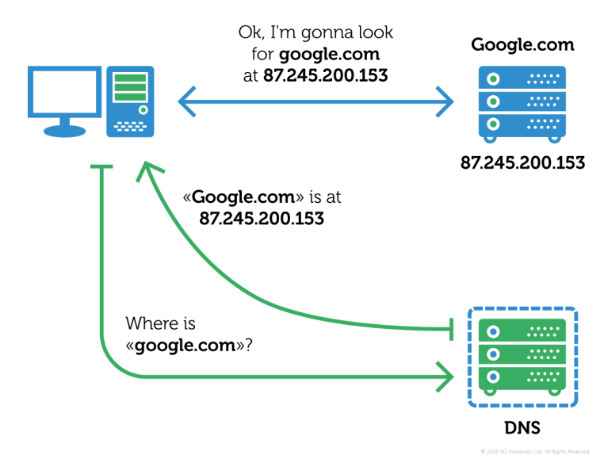

Sensibiliser au rôle du DNS
Utiliser l’analogie du carnet de contacts pour comprendre la résolution d’un nom en adresse IP.
Du nom à l’adresse
On peut adapter le jeu de rôle initial en ajoutant une contrainte supplémentaire (analogie possible avec l'envoi de SMS) : la transmission du message à l’Eleve 15 nécessite de connaître son adresse (son numéro de téléphone pour un SMS).
L’Elève 1 connaît-il par cœur le numéro de téléphone de l’Elève 15 ?
Non
Comment peut-il l’obtenir ?
il cherche dans ses contacts
et si son numéro ne s’y trouve pas ?
il demande à un autre élève (ami) s’il peut lui fournir son numéro
Le Domain Name System, généralement abrégé DNS, qu'on peut traduire en « système de noms de domaine », est le service informatique distribué utilisé pour traduire les noms de domaine Internet en adresse IP ou autres enregistrements.

Bilan
L’application contacts joue le rôle de serveur DNS : elle permet de retrouver le numéro de téléphone (adresse IP) d’une personne (nom de machine).
Recherche d’une adresse IP
https://whoer.net/fr/checkwhois Permet de trouver une adresse IP avec une adresse physique.
Retrouver sur ce site, l’adresse IP publique de votre ordinateur et l’adresse du domaine « google.fr ».